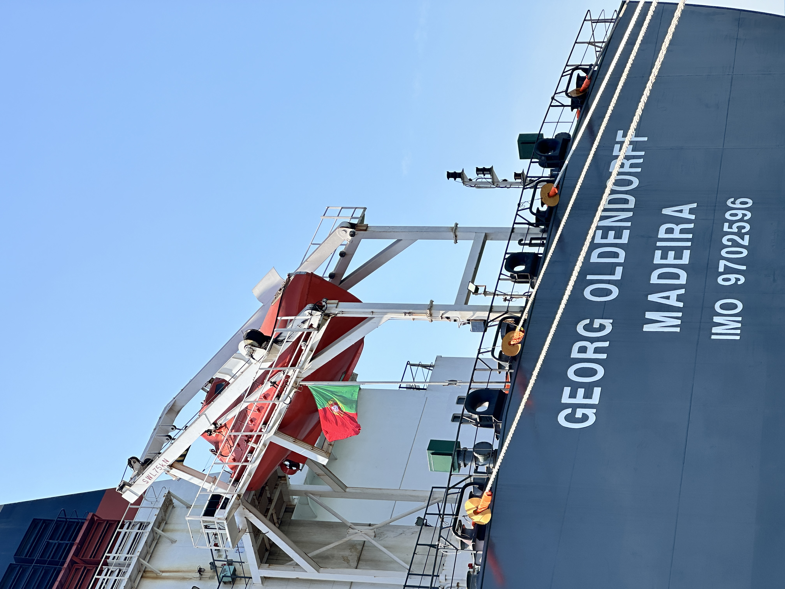
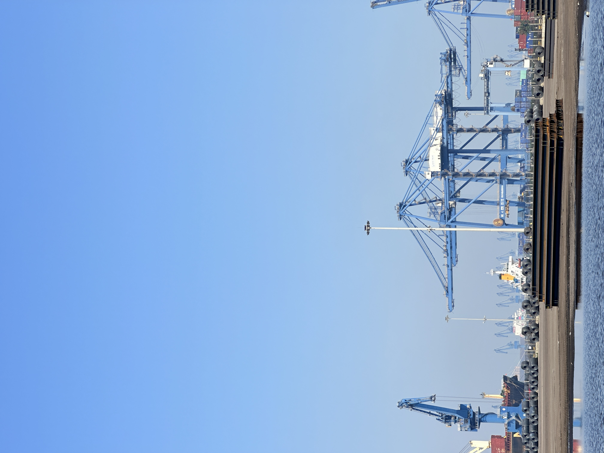
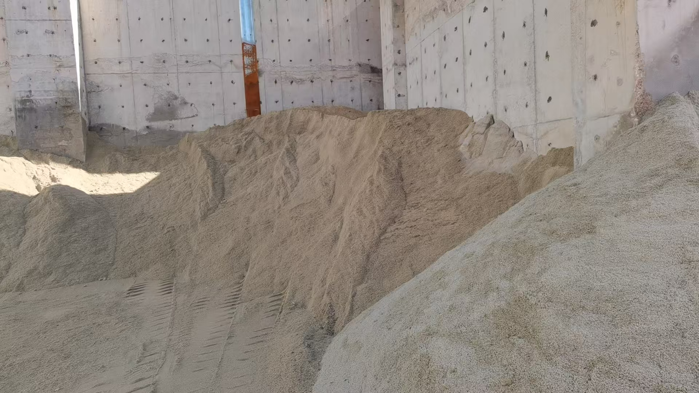

Gabon’s 2027 Clinker Import Ban Is Recasting Central Africa’s Cement Map
CIMAF is investing more than US$45 million to add a third line at Owendo near Libreville and expand local clinker capacity before Gabon’s planned 2027 clinker import ban. For cement and supplementary cementitious material exporters, the message is bigger than one plant: Central African buyers are moving from simple import dependence toward locally anchored grinding, clinker, and regional redistribution models.
加蓬 2027 年熟料进口禁令，正在重塑中非水泥版图
在加蓬计划于 2027 年实施熟料进口禁令之前，CIMAF 正投资超过 4500 万美元，在利伯维尔附近的 Owendo 新增第三条产线并扩大本地熟料产能。对水泥和补充胶凝材料出口商而言，这件事的意义不止于一座工厂：中非买家正从单纯依赖进口，转向以本地粉磨、熟料制造和区域再分销为核心的供应模式。

A recent expansion decision in Gabon offers a useful signal for anyone watching cement, clinker, and supplementary cementitious material flows into Africa. Moroccan producer CIMAF is investing more than US$45 million in its Gabon operation, including a third production line at Owendo near Libreville and a significant increase in clinker capacity. The timing matters: Gabon plans to ban clinker imports from January 2027 as part of a broader industrial self-sufficiency push. That turns the project from a routine capacity addition into a strategic repositioning of how one Central African market wants to source and manufacture cement.
1. Why this is more than one new production line
The most important part of the announcement is not simply the extra cement volume. It is the deliberate move into domestic clinker production ahead of a policy deadline. Clinker is the key intermediate input in cement manufacturing, and markets that rely on imported clinker remain exposed to freight volatility, port congestion, currency pressure, and external supply disruptions. By building more clinker capacity locally, CIMAF gains tighter control over its cost base and production rhythm. Gabon, in turn, reduces its dependence on offshore supply for a core construction material. In practical terms, that means future buyers in the market may evaluate cement suppliers less on who can ship imported clinker fastest and more on who can guarantee stable local output.
That policy-backed shift also matters beyond Gabon. Across Africa, governments are becoming more explicit about domestic value addition, industrial sovereignty, and keeping more manufacturing margin inside national borders. Cement is a natural starting point because it sits behind roads, ports, housing, factories, and energy infrastructure. When a government pairs import restrictions with new industrial investment, the resulting market structure changes can be durable rather than temporary.

2. The export-platform angle is what traders should really watch
Industry estimates cited around the project suggest CIMAF Gabon’s annual capacity could rise to roughly 1.85Mt, compared with domestic demand of about 0.9Mt. If that balance proves directionally correct, the implication is obvious: the investment is not only about import substitution inside Gabon. It is also about creating room for regional supply. A plant with output materially above home-market demand starts to look less like a local defensive asset and more like a platform for serving neighbouring Central African markets.
For exporters of cementitious materials, that changes the map. In some markets, direct finished-cement imports may become harder to sustain if local grinding and clinker integration become the preferred model. But the same transition can create opportunity in adjacent links of the chain: supplementary cementitious materials, blending inputs, operational partnerships, and flexible bulk logistics that support regional redistribution. The winners are often not the suppliers who assume the old import pattern will last, but the ones who adapt early to a more locally anchored supply system.

3. What this means for SCM and GBFS-related trade
For companies watching slag and other supplementary cementitious materials, the Gabon signal is especially relevant. When a market invests in clinker and grinding depth, it usually becomes more capable of using performance-enhancing blending materials as part of a broader cost, durability, and carbon strategy. That does not mean every country immediately becomes a GGBFS buyer at scale. It does mean that the conversation shifts from one-off cargo availability toward plant configuration, blending economics, standards acceptance, and stable long-term supply relationships.
For SENLAN Trading, the practical takeaway is straightforward: markets like Gabon should be watched not only as destinations, but as evolving processing and redistribution nodes. As African cement systems deepen, suppliers with reliable bulk execution, flexible loading terms, and a clear understanding of how GBFS or GGBFS fits into blended-cement economics will be better positioned to stay relevant. The headline is a Gabon expansion, but the broader message is that Central Africa’s cement trade is becoming more industrial, more policy-shaped, and more selective about where value is created.
加蓬最近的一项扩产决定，为关注非洲水泥、熟料和补充胶凝材料流向的人提供了一个很有价值的信号。摩洛哥水泥生产商 CIMAF 正向其加蓬业务投资超过 4500 万美元，其中包括在利伯维尔附近 Owendo 基地新增第三条产线，并显著扩大熟料产能。时间点非常关键：加蓬计划从 2027 年 1 月起禁止熟料进口，作为更广泛工业自给战略的一部分。这使得该项目不再只是常规扩能，而是一次关于中非市场如何组织水泥采购与制造方式的战略重定位。
1. 为什么这不只是新增一条产线
这次宣布中最重要的，并不只是新增了多少水泥产量，而是在政策时点到来之前，主动转向本地熟料生产。熟料是水泥制造的关键中间品，凡是依赖进口熟料的市场，都会暴露在运费波动、港口拥堵、汇率压力和外部供应中断的风险之下。通过在本地建设更多熟料产能，CIMAF 可以更紧地掌控成本基础和生产节奏。对加蓬而言，这也意味着对核心建筑材料的海外依赖度下降。换句话说，未来这个市场的买家衡量供应商时，可能不再只看谁能最快把进口熟料运到，而更看重谁能保证稳定的本地输出。
这种由政策推动的转向，对加蓬之外的市场也有参考意义。当前非洲多国政府对本地增值、工业主权以及将更多制造利润留在本国边界内的表述正变得越来越明确。水泥是这一战略的天然起点，因为它支撑着道路、港口、住宅、工厂和能源基础设施。当一个政府把进口限制与新增工业投资配套使用时，最终形成的市场结构变化往往不是短期的，而是具有持续性的。
2. 贸易商真正该盯住的，是“出口平台”这一层
围绕该项目的行业估计显示，CIMAF 加蓬的年产能可能提升至约 185 万吨，而本地需求大约只有 90 万吨。如果这一供需对比大体成立，其含义就很清楚：这项投资不仅仅是为了在加蓬国内替代进口，也是在为区域供应腾出空间。当一个工厂的产量明显高于本国市场需求时，它看起来就不再只是一个防守型本地资产，而更像一个面向周边中非市场的供应平台。
对胶凝材料出口商而言，这会改变原有地图。在一些市场，如果本地粉磨加熟料一体化成为更受欢迎的模式，直接进口成品水泥的空间可能会被压缩。但同样的转变，也可能在链条的相邻环节创造机会：补充胶凝材料、掺配原料、运营合作，以及支持区域再分销的灵活散货物流。真正占优的，往往不是默认旧式进口格局会一直延续的供应商，而是能提前适应“更本地化供应系统”的那批人。
3. 这对 SCM 和 GBFS 相关贸易意味着什么
对关注矿渣及其他补充胶凝材料的企业来说，加蓬这个信号尤其值得注意。一个市场一旦开始投资熟料和粉磨深度，通常也会更有能力把提升性能的掺合料纳入更广泛的成本、耐久性和碳排策略之中。这并不意味着每个国家都会立刻成为大规模 GGBFS 买家，但它确实意味着，讨论重点会从一次性货源可得性，转向工厂配置、掺配经济性、标准接受度以及稳定的长期供应关系。
对森蓝贸易而言，实际启示很直接：像加蓬这样的市场，不应只被视为终端目的地，也要被看作正在演变的加工与再分销节点。随着非洲水泥体系不断加深，能够稳定执行散货发运、提供灵活装运条款，并清楚理解 GBFS 或 GGBFS 如何嵌入掺配水泥经济性的供应商，会更有机会保持相关性。表面上看，这是一次加蓬扩产新闻；更深层的意思则是，中非水泥贸易正在变得更工业化、更受政策塑形，也更挑剔价值究竟在哪一环被创造。
Explore products or discuss your inquiry.
If this market signal is relevant to your sourcing plan, you can review our core product pages or contact us with laycan, quantity, target specification and loading method.
Request a quote